SKM Version 2: SK-1 Installation Instructions
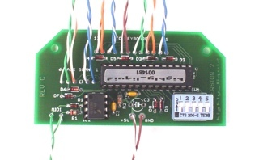
Step 2: Attach the hook-up wires.
Attach a 15" length of wire to each of the following pads on the SKM circuit board:
- MIDI "4" and "5"
- "+5V" and "GND"
- "TO KEYBOARD" pads 1-12
- "AUX SCAN" pads 1, 2, 4, 5, 6
Step 3: Disconnect power from the SK-1.
Disconnect any external power cords and remove any batteries from the SK-1. After disconnection, move the SK-1 "function" switch to the "play" position to drain any stored charges.
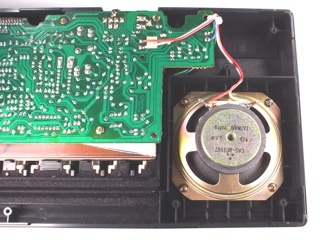
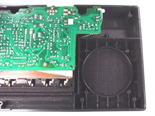
Step 4: Remove the internal speaker from the SK-1.
Open the SK-1's case and remove the speaker. Set aside the speaker mounting screws for re-use.
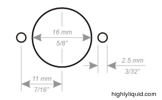
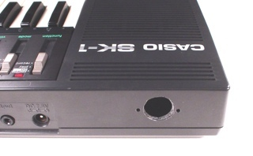
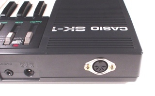
Step 5: Mount the MIDI jack on the SK-1.
The MIDI jack requires one 5/8" hole and two 3/32" holes as shown. Be careful not to damage the SK-1's internal parts when creating the holes.
Use two of the speaker mounting screws to secure the jack.
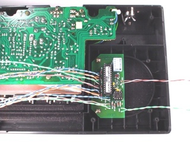
Step 6: Mount the SKM circuit board.
Use the remaining two speaker mounting screws to secure the SKM circuit board.
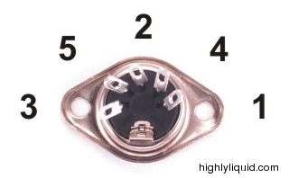
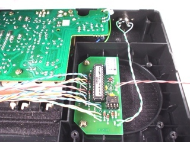
Step 7: Connect the MIDI jack to the SKM.
Note the numbering of pins on the MIDI jack.
Connect pin 4 on the MIDI jack to the pad marked "M4" on the SKM
circuit board. Connect pin 5 on the MIDI jack to the pad marked "M5" on
the SKM circuit board.
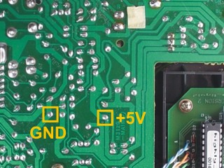
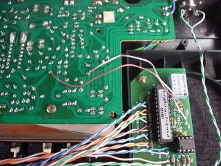
Step 8: Connect the SKM power lines to the SK-1.
Connect the "GND" and "+5V" pads on the SKM circuit board to the SK-1 main board as shown.
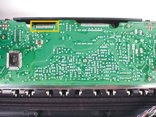
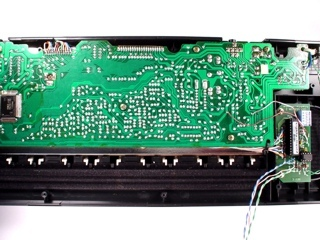
Step 9: Connect the SKM keyboard control lines to the SK-1.
Locate the 12-conductor ribbon cable that connects the SK-1
keys to the SK-1 main board. The conductors are numbered 1 to 12.
Connect each of the "TO KEYBOARD" pads on the SKM circuit board to the
corresponding conductor of the ribbon cable.
In this example, the wires are routed underneath the SK-1 main board to meet with the ribbon cable.
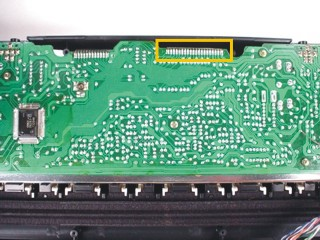
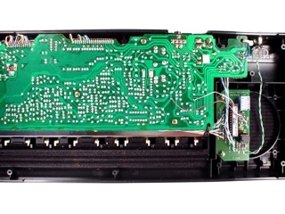
Step 10: Connect the SKM "AUX SCAN" control lines to the SK-1.
Locate the 20-conductor ribbon cable that connects the SK-1
buttons to the SK-1 main board. The conductors are numbered 1 to 20.
Connect each of the "AUX SCAN" pads on the SKM circuit board to the
following conductors of the ribbon cable:
| SKM "AUX SCAN" | SK-1 20-Pin Ribbon |
|---|
| 1 | 12 |
| 2 | 13 |
| 3 | Not Connected |
| 4 | 20 |
| 5 | 14 |
| 6 | 16 |
Installation Complete
Connect your SK-1 to the "MIDI OUT" port on any MIDI sequencer or MIDI controller.
----------------------------------------------------------------------------------------------------
----------------------------------------------------------------------------------------------------
----------------------------------------------------------------------------------------------------
|